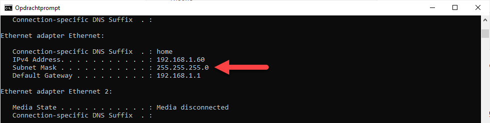

In het IP adres zelf zit er een zekere structuur. We kunnen zelfs zeggen dat, in tegenstelling tot een MAC adres, de waarde van het IP adres in verband staat met de fysieke locatie van de machine op het netwerk.
Dit is ook de reden waarom je met IP geolocation ongeveer kan zien waar je je bevindt op de kaart.
Als een router een pakket binnenkrijgt met een bepaald destination IP adres dan moet deze natuurlijk wel weten naar welke router deze best geforward moet worden om het pakket op zijn bestemming te krijgen. We noemen dit ook wel de next hop router.
Het subnetmasker kan gebruikt worden om een pakket dichter bij zijn bestemming te brengen (zie routing decisions) maar het kan ook gebruikt worden om een netwerk te verdelen in kleinere netwerken (private ip range / subnets).
Als je kijkt naar jouw subnetmasker via ipconfig dan kan je afleiden in welk netwerk je precies zit.
In mijn geval is het netwerk 192.168.1.0

Je bekomt dit getal door de AND bewerking te doen tussen IP adres en subnetmasker.
| 1 | 1 | 0 | 0 | 0 | 0 | 0 | 0 | 1 | 0 | 1 | 0 | 1 | 0 | 0 | 0 | 0 | 0 | 0 | 0 | 0 | 0 | 0 | 1 | 0 | 0 | 1 | 1 | 1 | 1 | 0 | 0 |
|---|---|---|---|---|---|---|---|---|---|---|---|---|---|---|---|---|---|---|---|---|---|---|---|---|---|---|---|---|---|---|---|
| 1 | 1 | 1 | 1 | 1 | 1 | 1 | 1 | 1 | 1 | 1 | 1 | 1 | 1 | 1 | 1 | 1 | 1 | 1 | 1 | 1 | 1 | 1 | 1 | 0 | 0 | 0 | 0 | 0 | 0 | 0 | 0 |
| 1 | 1 | 0 | 0 | 0 | 0 | 0 | 0 | 1 | 0 | 1 | 0 | 1 | 0 | 0 | 0 | 0 | 0 | 0 | 0 | 0 | 0 | 0 | 1 | 0 | 0 | 0 | 0 | 0 | 0 | 0 | 0 |
In plaats van het subnetmasker voluit te schrijven wordt soms ook een verkorte notatie gebruikt. In plaats van 255.255.255.0 schrijven we dan bijvoorbeeld /24 waarbij 24 overeenkomt met het aantal opeenvolgende 1’en, moest je het subnetmasker binair uitschrijven.
Als je de notatie 192.168.1.60 /24 ziet staan, dan weet je dat het gaat over een computer in het netwerk 192.168.1.0 met IP adres 192.168.1.60 en subnetmasker 255.255.255.0